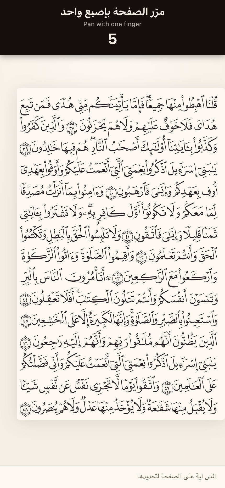
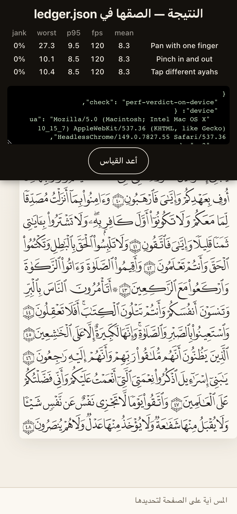

On-device pan/zoom + highlight-toggle verdict
perf-verdict-on-device · blocks loop-4b, loop-6b, loop-7
The emulated baseline (~8.3 ms/frame, flat under CPU throttle) structurally cannot see the two real risks: initial raster of a ~170 KB inline SVG on a low-end phone, and re-raster on zoom past the layer's backing store. The rendering-scale decision for 604 pages rests on this and nothing else.
What you need
- A real phone on the same Wi-Fi as this laptop — a mid/low-tier Android and an older iPhone if you have both; either one alone still answers most of it.
- No cable, no DevTools, no pairing. The page measures itself.
- About 3 minutes per device.
Setup — on the laptop
make phone-perf
Builds a throwaway probe bundle, prints On your phone (same Wi-Fi): http://<lan-ip>:4173, then holds the terminal open serving it. Leave it running.
Steps — on the phone
-
The mushaf page as normal, plus a dark slab pinned across the top reading «قياس الأداء على هذا الجهاز — ١٥ ثانية» with an ابدأ button. No slab means you are on an ordinary build — something else is already serving port 4173; stop it and re-run make phone-perf.
from the build · a shape to recognise, not a result to match Confirms you are measuring the build that has the probe in it. An ordinary build looks completely normal, which is exactly how you would not notice — and every number below would then be a measurement of the wrong thing.
-
«استعد / get ready» for one second before each segment, then the segment's instruction and a countdown. The slab ignores taps while recording, so you cannot accidentally drive it instead of the page.

from the build · a shape to recognise, not a result to match The one-second «استعد» beat is there so the tail of one gesture does not land in the head of the next segment. Rush it and the three numbers blur into each other, which is the one way this check can fail without looking like it failed.
-
The page moves under your finger and the counter runs 5→1. Keep moving: a still finger produces no frames and the segment will report «too few frames — not driven».
Pan is the cheap case: no re-raster, just compositing a layer that already exists. If pan is over budget then nothing further matters — the page is too heavy as DOM and the verdict is raster-fallback.
-
Zoom follows the pinch. The re-sharpen moment is the one being measured — it is the layer being re-rastered.
This is the whole check. Zooming past the layer's backing store makes the browser re-rasterize ~170 KB of glyph paths, and that cost is structurally invisible to the emulated desktop baseline. The rendering decision for all 604 pages turns on this one number.
-
Amber marker swipes land on each ayah you tap — one along the middle of every line it occupies, with the scripture still readable through them. Different ayahs, not the same one twice — you are measuring overlay churn.
Separates rendering cost from interaction cost. If only this segment is bad the problem is overlay churn in the highlighter — a real bug, but not one that changes which rendering strategy Loop 4b builds.
-
«النتيجة — الصقها في ledger.json», a row per segment with mean / fps / p95 / worst / jank (over-budget cells in salmon), and a read-only JSON blob stamped with the device, dpr, cores, standalone flag, build commit, and FCP/LCP. There is no copy button on purpose: a LAN preview is plain http, so the Clipboard API does not exist here.

from the build · a shape to recognise, not a result to match The table gives you the verdict; the JSON is what makes it re-checkable a year from now. It stamps device, dpr, cores, standalone flag and build commit, so a later reader can tell whether the number still describes the phone in their hand.
-
"standalone": truein the second JSON. Standalone gets its own compositor path on iOS, so the two runs can legitimately disagree — that difference is a result, not noise.iOS gives standalone its own compositor path. If the two runs disagree, the install prompt is doing load-bearing work rather than convenience work — and that changes what Loop 6b has to guarantee.
Reading the result
- p95 ≤ 16.7 ms and jank < 10% on all three segments → verdict inline-svg: inline SVG everywhere holds, and Loop 4b is plain vendoring + streaming.
- Pan fine but pinch p95 much worse → re-raster past the layer's backing store → verdict content-visibility: virtualize off-screen pages; do not rasterize glyphs.
- Pan itself over budget, or worst > 100 ms on the first pinch → the page is too heavy as DOM → verdict raster-fallback: rasterize the glyph layer, keep the polygon hit layer as DOM (the highlighter API does not change).
- Only the tap segment is bad → that is INP, not rendering: overlay churn in packages/core/src/highlighter.ts. It does not change the rendering verdict; file it separately.
- «too few frames — not driven» on any segment → that segment never got a real gesture. Re-run it; a number from an undriven segment is not a result.
- The two devices disagree → the low-end one decides. The budget exists for the phone that struggles.
Record it
make record CHECK=perf-verdict-on-device RESULT='inline-svg — Pixel 6a p95 14/23/9 ms (pan/pinch/tap), jank 6/18/2%; iPhone SE similar' — then paste the full JSON into docs/decisions/loop-4b.md
Then do what it tunes:
- apps/web/perf/pan-zoom-trace.mjs — the frame budget asserted in CI becomes the measured number, not the emulated one
- docs/PLAN.md §Loop 4b — which of the three rendering strategies gets built
Written up in docs/decisions/loop-1.md → a new docs/decisions/loop-4b.md